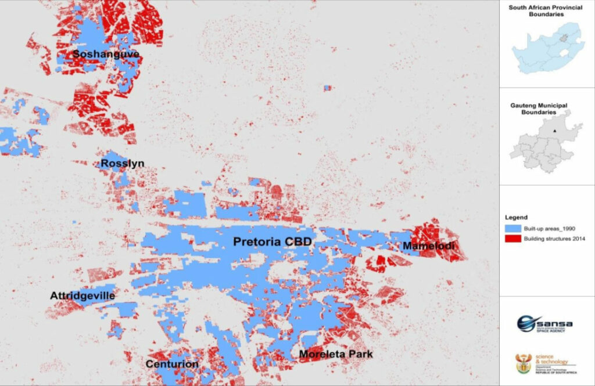
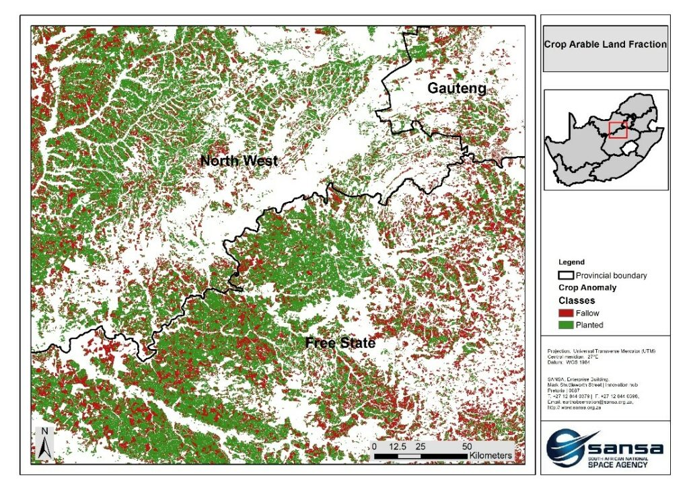
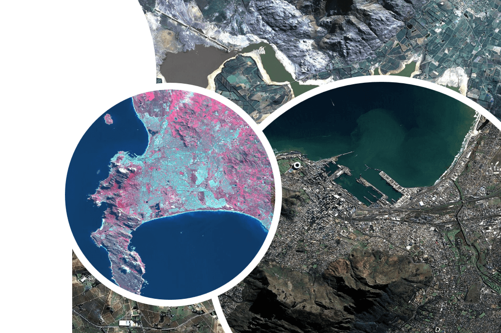

Harnessing Earth Observation data for sustainable development, decision-making, and research.
Digital Earth South Africa (DESA) aims to leverage emerging technologies to deliver a unique capability to store, manage, process, interrogate, and persistently distribute SANSA’s 30-year archive of Earth observation data in readily usable formats that further promote its usefulness in addressing a range of societal challenges. DESA will provide users with standardized, and easily accessible satellite data that allows for immediate analysis with a minimum of additional user effort.
A short overview of why DESA exists, the value of Earth Observation, and how DESA turns data into impact.
Digital Earth South Africa (DESA) aims to leverage emerging technologies to deliver a unique capability to store, manage, process, interrogate, and persistently distribute SANSA’s 30-year archive of Earth observation data in readily usable formats that further promote its usefulness in addressing a range of societal challenges. DESA will provide users with standardized, and easily accessible satellite data that allows for immediate analysis with a minimum of additional user effort.


The products and services derived from DESA will allow governments, scientists, businesses, and citizens to efficiently produce and use information to provide insights for land planning, agriculture, water and environmental management, security, disaster response, climate change adaptation and mitigation, and resource management.
DESA thus turns raw satellite Earth observation data into actionable easy to use data for the development of decision-making information products that support the implementation and achievement of the National Development Plan, Agenda 2063, and the Sustainable Development Goals targets.

Clear direction for how DESA grows, serves users, and turns Earth Observation data into impact.
Have DESA as a primary platform for pre-processed Earth Observation data that will be accessible to government stakeholders within the Earth Observation community.
Develop the framework for communications that provides access to information to engage DESA’s various audiences while developing internal communications capacity.
The South African National Space Agency (SANSA) has a legislative mandate for the acquisition, archiving, processing, and dissemination of satellite imagery to enable development of data and information products for the public sector and the Earth Observation community.
SANSA’s mandate is founded on the objectives of the National Space Policy, National Space Strategy, and the National Earth Observation Strategy. DESA aims to translate over 30 years of archived and newly acquired Earth Observation imagery into actionable information supporting government priorities and environmental management.
DESA data is derived from two satellites, SPOT and Landsat scenes, processed into Analysis Ready Data (ARD) level and then ingested into the Data Cube.